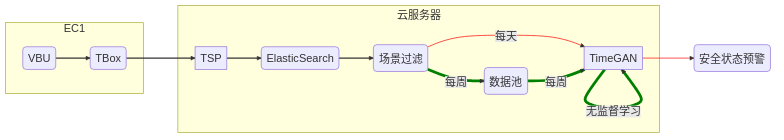

BLMP深度学习方法总结
:ID: cb2f4ab5-f2b5-4f52-a6f3-a9a643a256a4
电池银行大数据模型
数据来源：
- 信号：单体电芯电压
- 场景：充电
函数: \(V\) ; 自变量：电压，电流，温度, \(SoC\), \(SoH\), \(SoS\), …
\begin{align*} V &=f(I,T,SoC,SoH,SoS,...)\\ &\approx\hat{f}(I,SoC,SoH,SoS,...) \end{align*}
函数求逆
\(SoS \approx \hat{f}^{-1}(V,I,SoC,SoH,...), SoS \in \{Good, Bad\}\)
随机模型
- 获得安全状态和观测量之间的关系：\(SoS \approx \hat{f}^{-1}(V,I,SoC,SoH,...), SoS \in \{Good, Bad\}\)
- 随机模型：
- 不能找到精确的关系
- 确定允许的误差
- 缩小不确定性
- 非确定性，概率判定
- 可定量计算
- 不能找到精确的关系
- 目标：
- 估计概率分布模型
- 规律性（regularity)
- 观测量（时间特征）
- 大数据
- 估计概率分布模型
深度学习信号模型


- 时间序列观测量 \(\mathcal{X}_t\): (\(U_t\), \(I_t\),…)
- 场景选择
- 特征选择
- 参数 \(\mathcal{S}\): (\(SoS\), \(SoC\), \(SoH\), \(T\),…)
- 压缩时间序列 \(\mathcal{H}_{\mathcal{X}_t}\)
- 压缩隐藏参数 \(\mathcal{H_{\mathcal{s}}}\)
- 鉴别器（隐空间 Discriminator)直接输出离群度作为定量判别依据
深度学习网络模型
可观测性假设：低维度信号(\(\mathcal{S}: (SoS, SoC, SoH,...)\) 决定高维度信号 \(\mathcal{X}_t: (U_t, I_t)\) 分布

Figure 3: 时间序列 GAN 模型
- 时间序列自动编解码器
- 压缩映射到隐空间
- 降低维度提高效率
- 监督学习
- 提高时间特性学习效率
- 生成对抗网络（GAN）
- 隐空间训练
- 掌握数据分布
- 生成逼真的数据
深度学习特点
- 无监督学习
- 学习数据分布
- 经验知识的数学模型
- 从大数据中提炼信息，规律，知识
- 高效可持续消化大数据
- 选择合适的特征可极大提高效率
- 方法和模型的快速改善
机器学习运维模式（云服务器）MLOps
graph LR
subgraph "EC1"
VBU(VBU)-->TBox(TBox)
end
subgraph "云服务器"
direction LR
TBox-->TSP
TSP-->ES(ElasticSearch)
ES(ElasticSearch)-->SceneFilter("场景过滤")
SceneFilter("场景过滤")--每周-->Pool("数据池")
SceneFilter("场景过滤")--每天-->TimeGAN
Pool("数据池")--每周-->TimeGAN
TimeGAN--无监督学习-->TimeGAN
end
TimeGAN-->SoS("安全状态预警")
linkStyle 5 stroke-width:1px,stroke:red
linkStyle 8 stroke-width:1px,stroke:red
linkStyle 6 stroke-width:4px,stroke:green
linkStyle 4 stroke-width:4px,stroke:green
linkStyle 7 stroke-width:4px,stroke:green

Figure 4: 训练和推理的数据流
结果
无监督学习训练
数据样本
数据分布由给定样本集合确定（训练集，验证集，测试集）
- 复杂度可控的模拟样本
- 正弦波：随机采样参数相位，频率，自由度 N=2
- 三角波：随机采样参数相位，频率，斜率，自由度 N=3
- 真实样本:
- 原始单体电压充电场景下时间序列，自由度 N=?
- 充电 80%～100%（充满）
- 在多种形态下选择最常见的一种，肉眼判断约占总样本 20%
- 固定自由度的三次样条拟合原始单体电压
- 保持基本形态的前提下，降低复杂度
- 选择位置固定的节点，保持基本形态,节点数 N=11
- 随机采样节点横向和纵向扰动，自由度 3N
- 原始单体电压充电场景下时间序列，自由度 N=?
验证
- 从冻结的生成器（Generator)随机采样
- 从训练样本中匹配最相似时间序列
- 压缩空间聚类可视化
- 从不同样本集采样，交叉验证
正弦波的生成模型训练和采样结果（单模态）
正弦波的压缩空间聚类（单模态）
正弦波的模拟离群点检测（单模态）
三角波的生成模型训练和采样结果（单模态）
充电电压样条拟合数据的生成模型训练和采样结果
混合时间序列(正弦与三角）生成模型和采样结果（多模态）
监督学习
可理解的时间序列特征，监督学习训练成熟稳定

- 数据样本是已标注的多模态数据（含离群数据和多模态正常数据）
- 利用时间序列通用特征 FAIR（KAT，65 个特征)
- 均值，方差，中值，过中线次数
- 自相关，鲁棒性统计量，季节性变化系数，趋势系数
- Hurst 指数（自相关系数随时间衰落的指数（長時记忆）），KPSS 测试（稳态表征）
监督学习的优点
- 结果可解释，主要依据专家知识（标签，可解释特征）
- 利用专家知识和时间序列特征区分不同模态
- 可与专家交互，判断和定义新模态，迭代更新模型
- 高效处理已知且特征可描述的异常数据，专家只需处理新的模态
- 利用反向传播算法确定特征作用的权重，筛选相关特征
结果
总结（工具箱 ）
- 弱特征（原始数据）： LSTM/GRU 形式的时间序列对抗生成网络
- 低复杂度信号的构造和快速闭环反馈调试
- 以原始数据为目标的评估
- 生产环境原始信号低复杂度拟合与训练
- 需要明确单体电压充电工况的模态特征波形
- 强特征：利用通用时间序列特征（KAT）的监督学习方法
- 专家在环的开发方式
- 自动评估特征对分类的重要性权重
- 估计信号复杂度以及和计算资源关系
- 试运行生产环境的机器学习运维
- 训练: 每周场景数据自动收集，训练与模型更新
- 推理：场景数据自动获取和推理报警
挑战
时间序列特征工程
- 建模困难
- 不像图像和自然语言，无法利用已有的人类知识，概念
- 已有的经验知识表述不系统，不确定度高前后不一致 需要收集和分析经验知识
机器学习
- RNN 对长的时间序列数据（>100)较难训练
- GAN 训练不稳定
- 计算资源瓶颈 目前复杂度上限：隐藏维度 8,层数 2,batch 32
- 训练样本不足 目前符合要求的时间序列<10000
时间序列模型构建
- 场景选择影响信号的复杂度
- 时间序列特征选择影响模型结构和超参选择
- 独立于场景选择的通用模型，依赖条件模型的训练 增加输入时间序列信号的维度，极大增加复杂度
机遇
经验知识和大数据结合
- 专家在环迭代
- 专家知识可被机器学习模型吸收
- 减轻重复人工劳动
- 深度学习是目前最好的大数据技术
模型改进
- Transformer 模型取代 GRU/LSTM
- 条件推理模型
- 多模态聚类隐空间改进
- 基础模型作为服务（Model as Service)
扩散模型 diffusion model
- 稳定有效对数据分布进行变换的深度学习方法
- 静态分布估计到概率函数分布变换
- 计算资源，单机单卡可以进行推理
- 效率提升：半年 1000x 加速
- 跨领域应用：图像，自然语言，视频，音频
图像扩散模型用于补全